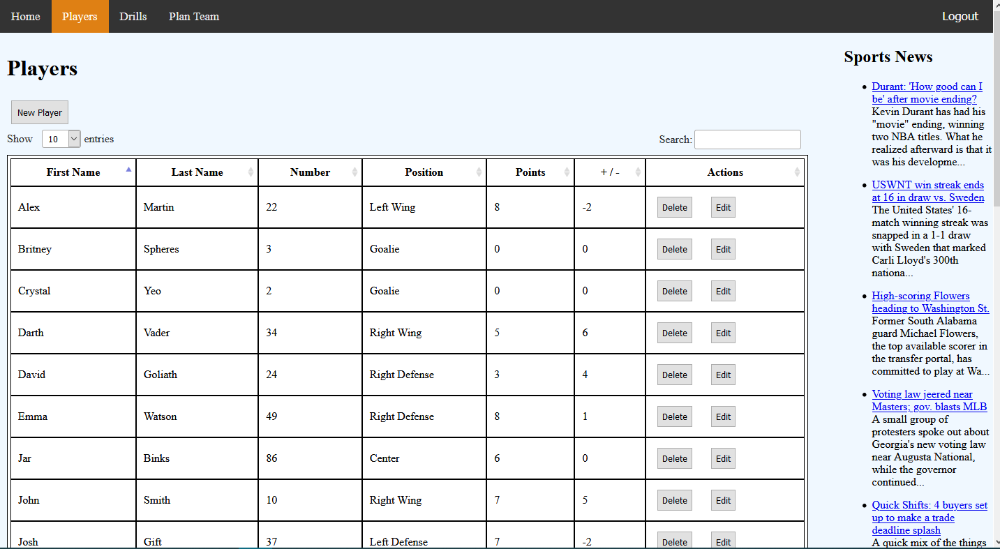
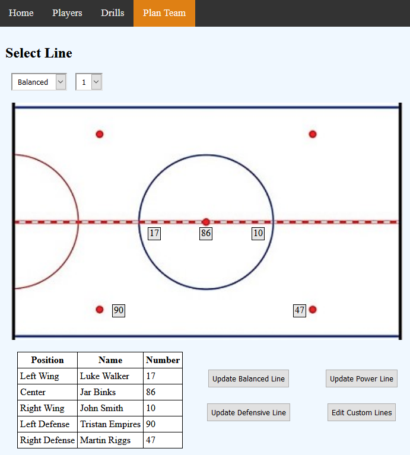
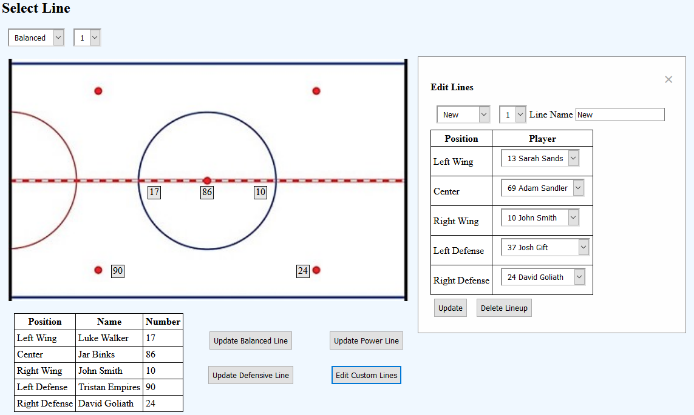
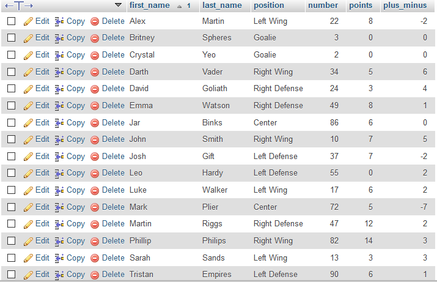
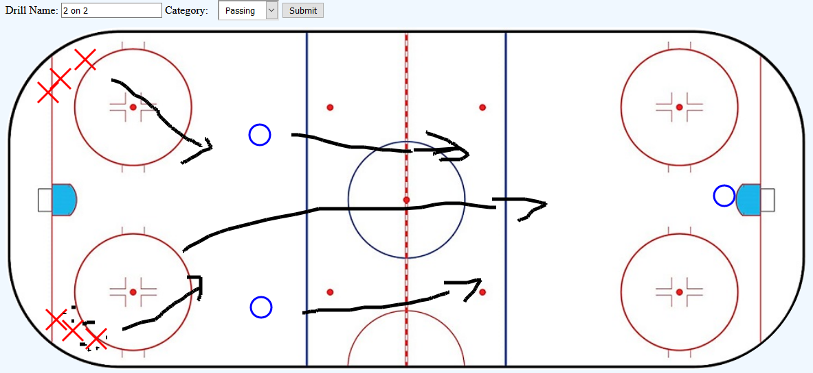
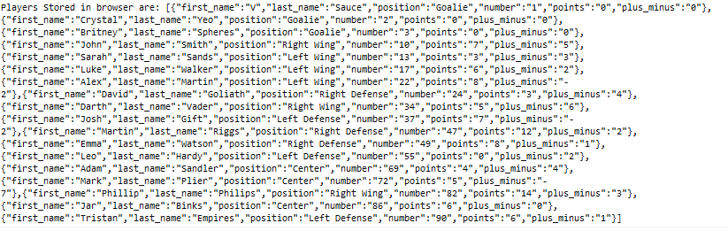

Author: Ben Keunen, Matthew Wong
Date: April 10th
We have an SPA that contains 5 separate views of which 4 are accessible through a navigation bar by the user. These views are Home, Players, Drills, Plan Team, and Login, of which Login cannot be accessed by tab but instead is loaded as default when user is not logged in. Every view is loaded into the main page while the navigation bar, and RSS sports feed are left untouched. The user henceforth known as the coach, can access his players statistics and click to update and edit. The coach is able to sort the drills and players by any column they wish. In addition to this the coach is able to easily visualize the player lineups and drills with the provided UI.


As can be seen in the previous image the UI for teams has 3 buttons that say “Generate” and a fourth that says “Edit Custom”. These buttons allow the coach to tell the server that he has made changes to his team or a players statistics has been changed so it will go and update the database to ensure that all lineups reflect the current strengths of the players. In addition to this all editing and deleting of the drills, players, and lineups are handled by server side php functions which change the database to match what the user has input and changed client side. This includes the encoding and decoding of the canvas image for drills to allow for the storage of the visuals they created to go along with the drills.

The database is a three tier design with the server handling the communication between the client side website and the local database. The client sends data to the php function which then uses the mysqli library to submit the changes to the database ensuring that the users changes are not lost when the website is closed. Seen below is some sample data that has been inserted to the database concerning the players.

The website features users and password encryption, as of right now the users can all access the same data, this is just for knowing who is accessing the data ie a coach or assistant coach. Another feature is the rss feed on the side which loads links to news articles from 3 popular sports news websites. This allows the user to keep up to date on current news while managing there team, but is hidden if the screen is too small so the coach can focus on the importance of the game, ie if they are accessing it on a tablet. Another feature is the ability to use a canvas as a whiteboard which supports key presses to adjust the shape being drawn, so the coach can quickly outline to his players what he is looking for during the game or in practices. Finally the whole site is packaged as a docker image which allows for easy transfer to other computers.

The main problem solving algorithms are in the creation of the specific line ups that the coach may require during the game, that is the Balanced, Power, and Defensive lines. It loads the current players stats and assigns them to lines based on what lineup the coach was choosing to generate.
Updated Power Line
This site makes efficient use of the async and await capabilities of javascript to ensure the user is not left hanging as stuff attempts to load. In addition to this the drills section of the site does not load all drills at once and instead loads just the name, category and id to prevent overwhelming the browser with a request for what could be hundreds of large images that correspond with each drill. Then if a user selects a drill to view it request only that drills image and returns it to the canvas so that it can be edited and removed if neccessary. The site limits what the user can input using dropdown menus to ensure that they submit data that fits. For example in the lineup editor it gives a dropdown list of existing players so that they cannot create a line with a player who does not exist. In addition to this it ensures that each player in the table has a unique number and checks if the number exists before inserting a new player. Another piece of efficiency is that the players and lineup tables are only queried from once at the beginning and stored in the broswer so that even after making changes and updating the database it does not need to requery but instead the data is already updated locally, only checking to see if the data had been stored properly.
